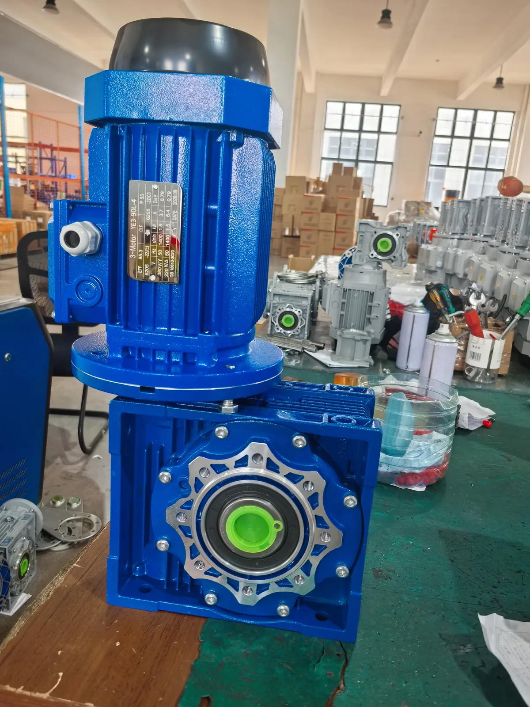

Published August 17, 2026 · Updated August 25, 2026 · Reviewed by SMK Transmission

Some heat is normal during operation, but a motor that smells of burnt insulation, produces smoke, loses speed, makes unusual noise or repeatedly trips its overload protection should not be kept running. Stop it safely and find the cause before restarting. Prolonged overheating can damage the windings, bearings and driven equipment.
Safety: Electrical testing should be performed by qualified personnel. Isolate the supply and follow lockout/tagout procedures before opening the terminal box or working on the motor.
Why Is a Three-Phase Motor Overheating?
Excessive heat usually comes from electrical losses, mechanical losses or inadequate cooling. The most common causes are mechanical overload, low or high voltage, voltage imbalance, current above the nameplate rating, loss of one phase, an incorrect delta/star connection, blocked airflow, worn bearings, excessive starts and incorrect VFD parameters. Frame temperature alone cannot identify the fault; compare measured operating conditions with the nameplate and manufacturer limits.
How to Troubleshoot an Overheating Electric Motor
1. Stop the Motor and Record the Symptoms
Allow the motor to cool. Record whether overheating occurs at startup, under load, after continuous operation or only at low VFD speed. Note overload trips, unusual noise, vibration, odor, speed loss and changes in the driven machine. Record motor-frame and bearing temperatures at consistent locations when possible.
2. Check the Motor Nameplate
Confirm rated power, voltage, frequency, current, speed, duty, insulation class, ambient temperature and the connection diagram. The supply voltage, frequency and winding connection must match the nameplate. Also confirm that the duty rating suits the operating cycle.
3. Measure All Three Line-to-Line Voltages
Measure L1-L2, L2-L3 and L3-L1 at the motor terminals under normal operating conditions. Compare the readings with the rated voltage and with one another. A missing phase, loose terminal, damaged contactor, blown fuse or unbalanced supply can produce severe current imbalance and rapid heating.
Voltage unbalance (%) = maximum deviation from average voltage ÷ average voltage × 100. Even a small voltage unbalance can create a much larger current unbalance. Follow the motor manufacturer's permitted limit.
4. Measure Current on All Three Phases
No phase should exceed the nameplate current during normal full-load operation, and the three readings should be reasonably balanced. High current on every phase often points to overload, low voltage, incorrect connection or a motor fault. A large difference between phases can indicate voltage imbalance, single phasing, a poor connection or winding damage.
5. Verify the 220/380 V Delta/Star Connection
Always use the connection diagram on the nameplate or inside the terminal-box cover. Do not assume that every six-terminal motor uses the same voltage arrangement.
A 220 V three-phase supply normally uses delta (Δ).
A 380 V three-phase supply normally uses star (Y).
Each winding is designed for approximately 220 V. In delta, each winding receives the full line voltage. In star, each winding receives line voltage divided by √3, so a 380 V supply applies about 220 V to each winding.
Connecting this motor in delta on 380 V over-voltages every winding and can cause very high magnetizing current, rapid overheating and winding failure. Connecting it in star on 220 V under-voltages each winding. The motor may start with weak torque, slow under load and draw excessive current while trying to drive the machine, which can also cause overheating.
Star-delta starting is a separate control method: the motor starts temporarily in star and then changes to delta for normal operation. The final running connection must still match the nameplate and supply voltage.
ASK AN ENGINEER
6. Isolate the Mechanical Load
With power safely isolated, check whether the driven equipment turns freely. Inspect for a jammed gearbox, excessive belt tension, poor alignment, product buildup, a blocked pump or operation above the machine's design load. Where site procedure permits, compare motor operation with the load disconnected. If current and temperature return to normal, the problem is likely in the load or transmission.
7. Inspect Cooling and Ventilation
Clean dust, oil and debris from cooling fins, the fan cover and air passages. Check that the fan is intact and airflow is unobstructed. Confirm that the motor is not too close to a wall or heat source and that ambient temperature and altitude remain within rated conditions.
8. Check Bearings, Lubrication and Alignment
Listen for grinding or rumbling and check for abnormal bearing temperature, vibration or shaft play. Too much, too little or incompatible grease can increase temperature. Misalignment, soft foot and excessive belt tension add radial load and mechanical loss.
9. Review Starting Frequency and Duty
Every start creates high current and heat. Frequent starts, plugging, reversing or long acceleration may exceed the rated duty even when running current appears normal. Compare starts per hour, load inertia and cycle duration with the motor requirements.
10. Check VFD Settings and Low-Speed Cooling
For an inverter-driven motor, confirm the rated voltage, current, frequency, speed and power entered in the VFD. Check acceleration time, torque boost, carrier frequency, current limit and the voltage/frequency profile. A self-cooled motor may overheat while producing torque at low speed because its shaft-mounted fan moves less air. Forced ventilation or an inverter-duty motor may be required.
11. Test the Windings and Insulation
If the supply, load, wiring and cooling are satisfactory but the motor still overheats, a qualified technician should test phase resistance, insulation resistance and winding condition. Unequal resistance, a shorted turn, contamination or insulation breakdown may require professional repair or replacement.
Quick Motor Overheating Troubleshooting Table
| Observation | Likely cause | What to verify |
|---|---|---|
| All three currents are high | Overload, low voltage, wrong connection or undersized motor | Load, supply voltage, Δ/Y connection and nameplate current |
| Current differs significantly by phase | Voltage imbalance, single phasing, poor terminal or winding fault | All three voltages and currents, fuses, contactor and terminals |
| Motor overheats only under load | Excess machine load, binding, misalignment or wrong ratio | Driven equipment, coupling, belts, gearbox and operating point |
| Motor overheats at low VFD speed | Reduced fan cooling, excessive torque or incorrect VFD data | Drive parameters, load and need for forced ventilation |
| Bearing area is hottest | Bearing wear, lubrication, belt tension or misalignment | Bearings, grease condition, alignment and radial load |
| Motor heats rapidly after rewiring | Wrong supply voltage or delta/star connection | Stop immediately and compare terminal links with nameplate |
How to Fix an Overheated Electric Motor
There is no universal reset or single repair. Stop the motor and allow it to cool, then correct the measured cause. Typical fixes include reducing the load, restoring balanced three-phase power, replacing damaged connections, correcting the delta/star links, cleaning the cooling system, repairing bearings, realigning the drive, correcting valid VFD parameters or selecting a motor with the right power, duty and cooling method. Do not repeatedly reset the overload protection; it does not remove the fault that caused the trip.
Frequently Asked Questions
What causes a three-phase motor to overheat?
Common causes include overload, voltage or current imbalance, single phasing, incorrect star/delta wiring, poor ventilation, bearing friction, frequent starting, unsuitable VFD settings and winding damage. Measure voltage and current on all three phases and compare them with the nameplate before deciding on a repair.
How do you fix an overheated electric motor?
Stop the motor, let it cool and identify the cause before restarting. Check the nameplate, supply voltage, current on all phases, delta/star connection, mechanical load, airflow, bearings and VFD settings. Repair the fault or replace an incorrectly selected or damaged motor.
Can incorrect star/delta wiring cause motor overheating?
Yes. For a 220/380 V Δ/Y motor, the normal running connection is delta at 220 V and star at 380 V. Delta on 380 V over-voltages the windings and can cause rapid failure. Star on 220 V produces weak torque and may cause high current under load.
Why does a motor overheat even when the current is normal?
Possible causes include blocked ventilation, high ambient temperature, frequent starting, bearing friction, misalignment or a duty cycle that exceeds the rating. Low-speed VFD operation can also reduce fan cooling.
Can low voltage make a motor overheat?
Yes. When a loaded induction motor receives insufficient voltage, it may draw more current to produce the required torque, increasing winding losses and temperature.
Why does a three-phase motor overheat on a VFD?
Typical causes include incorrect motor data, excessive torque demand, unsuitable voltage/frequency settings, repeated acceleration, high carrier frequency or insufficient cooling at low speed.